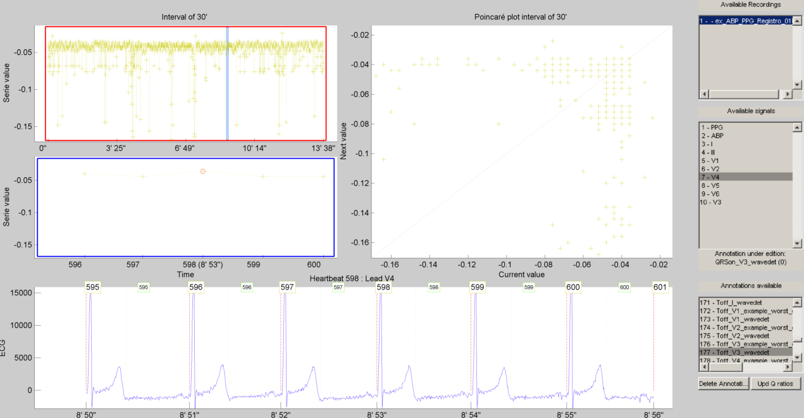
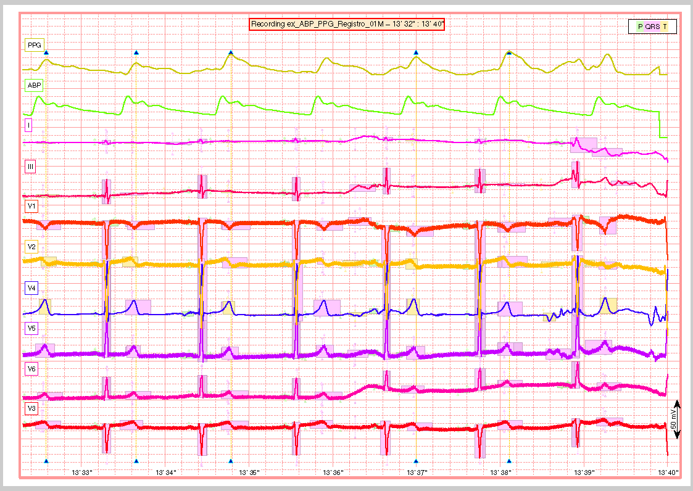

Examples¶
Example of how to use the ECGkit¶
This script exemplifies the use of the ECGkit in a multimodal cardiovascular recording which includes arterial blood pressure (ABP), plethysmographic (PPG) and electrocardiogram signals. The following tasks will be performed in this example:
- Heartbeat/QRS detection
- ABP/PPG pulse detection
- ECG wave delineation
- Heartbeat classification
- Report generation
Each automatic step is followed by a manual verification step in order to verify the algorithm’s results. The script is prepared to run locally without arguments, as well as in a cluster environment by using “pid_str” argument. The pid_str argument is a char with format ‘N/M’, being N <= M with default value ‘1/1’. You can partition a big job into M pieces in cluster architecture, by starting M processes with N ranging from 1 to M.
You can watch a typical run of this script for small, local ECG recording on YouTube.
Example of how to run this script
examples()
examples('1/1', 'C:\Your_preferred_local_path\', 'arbitrary_string')
examples('1/10', '/Your_preferred_path_in_cluster/', 'arbitrary_string')
Contents¶
- Function prototype
- Argument parsing
- QRS automatic detection
- QRS visual inspection and correction
- PPG/ABP pulse detection
- PPG/ABP waves visual inspection and correction
- ECG automatic delineation
- Visual inspection of the detection/delineation
- Automatic Heartbeat classification
- Visual inspection of the signal
- Other user-defined tasks ...
Function prototype¶
function examples(pid_str, examples_path, user_str)
examples accepts three optional arguments:
- pid_str (optional) string identifier for this work instance in
a cluster computing or multitask environment. The identifier follows
the form ‘N/M’, being N a number which identifies this execution
instance and M the total amount of instances.
'1/1' (default) - examples_path (optional) string of the path with ECG
recordings.
['.' filesep 'example_recordings' filesep ] (default); - user_str (optional) string to identify this run or experiment.
Argument parsing¶
Simple and straight forward.
if( nargin < 1 || ~ischar(pid_str) )
% single PID run
pid_str = '1/1';
end
if( nargin < 2 || ~exist(examples_path, 'dir') )
% inspect ECG files in rootpath\example_recordings\ folder
root_path = fileparts(mfilename('fullpath'));
% default folder to look at
examples_path = [root_path filesep 'example_recordings' filesep ];
if(~exist(examples_path, 'dir'))
disp_string_framed(2, 'Please provide a valid path with ECG recordings');
return
end
else
if( examples_path(end) ~= filesep )
examples_path = [examples_path filesep];
end
end
if( nargin < 3 )
user_str = '';
end
% Explore the *examples_path* for ECG recordings.
filenames = dir(examples_path);
recnames = {filenames(:).name};
% In this case I hardcoded only one recording
recnames = {'ex_ABP_PPG_Registro_01M'};
% But you can use this to iterate for all of them.
% [~,recnames] = cellfun(@(a)(fileparts(a)), recnames, 'UniformOutput', false);
% recnames = unique(recnames);
% recnames = setdiff(recnames, {'' '.' '..' 'results' 'condor' });
% recnames = recnames(1)
lrecnames = length(recnames);
% In case of running in a user-assisted fashion.
bUseDesktop = usejava('desktop');
if( bUseDesktop )
tmp_path = tempdir;
output_path = [ examples_path 'results' filesep ];
else
% For cluster or distributed environment processing.
InstallECGkit();
% this is a local path, usually faster to reach than output_path
tmp_path = '/scratch/';
% distributed or cluster-wide accesible path
output_path = [ examples_path 'results' filesep ];
end
% just for debugging, keep it commented.
% bUseDesktop = false
QRS automatic detection¶
In this example the first step is the location of each heartbeat, or QRS complexes detection. To achieve this, the kit includes the following algorithms:
- Wavedet
- Pan & Tompkins
- gqrs
- sqrs
- wqrs
- ecgpuwave
The way of performing QRS detection (or almost any other task in this ECGkit) is through an ECGwrapper object. The objective of this object is to abstract or sepparate any algorithm from the particular details of the ECG signal. This object is able to invoque any kind of algorithm through the interface provided of other object, called ECGtask obejcts.
The ECGtask obejcts actually perform specific task on the ECG signal, in this case, the QRS complex detection. Each task have general properties such as user_string, progress_handle (see ECGtask class for more details) and other specific for a certain task, such as detectors, only_ECG_leads, wavedet_config, gqrs_config_filename (see others in QRS detection task source).
% go through all files ECG_all_wrappers = []; jj = 1; for ii = 1:lrecnames rec_filename = [examples_path recnames{ii}]; % task name, % ECGt_QRSd = ‘QRS_detection’; % or create an specific handle to have more control ECGt_QRSd = ECGtask_QRS_detection(); % % select an specific algorithm. Default: Run all detectors % ECGt_QRSd.detectors = ‘wavedet’; % Wavedet algorithm based on % ECGt_QRSd.detectors = ‘pantom’; % Pan-Tompkins alg. % ECGt_QRSd.detectors = ‘gqrs’; % WFDB gqrs algorithm. % % Example of how you can add your own QRS detector. % ECGt_QRSd.detectors = ‘user:example_worst_ever_QRS_detector’; % ECGt_QRSd.detectors = ‘user:your_QRS_detector_func_name’; % % “your_QRS_detector_func_name” can be your own detector. ECGt_QRSd.detectors = {‘wavedet’ ‘gqrs’ ‘wqrs’ ‘user:example_worst_ever_QRS_detector’}; % you can individualize each run of the QRS detector with an % external string ECGt_QRSd.user_string = user_str; % or group by the config used % ECGt_QRSd.user_string = ECGt_QRSd.detectors; % ECGt_QRSd.only_ECG_leads = false; % consider all signals ECG ECGt_QRSd.only_ECG_leads = true; % Identify ECG signals based on their header description. ECG_w = ECGwrapper( ‘recording_name’, rec_filename, ... ‘this_pid’, pid_str, ... ‘tmp_path’, tmp_path, ... ‘output_path’, output_path, ... ‘ECGtaskHandle’, ECGt_QRSd); try % process the task ECG_w.Run; % collect object if were recognized as ECG recordings. if( jj == 1) ECG_all_wrappers = ECG_w; else ECG_all_wrappers(jj) = ECG_w; end jj = jj + 1; catch MException if( strfind(MException.identifier, ‘ECGwrapper:ArgCheck:InvalidFormat’) ) disp_string_framed(‘*Red’, sprintf( ‘Could not guess the format of %s’, ECG_w.recording_name) ); else % report just in case report = getReport(MException); fprintf(2, ‘n%sn’, report); end end end % recognized recordings lrecnames = length(ECG_all_wrappers); % at the end, report problems if happened. for ii = 1:lrecnames ECG_all_wrappers(ii).ReportErrors; end
QRS visual inspection and correction¶
This part of the example uses a graphical user interface (GUI) to allow the user correcting mistakes that the previous automatic algorithm eventually makes.
As can be seen in the following code, the first step is checking that the previous QRS detection task finished without problems. Then if no errors, the corrector will use as starting point the result of this same task, in case the user would like to edit a previously edited result, or if not available the result of the QRS detection task.
if( bUseDesktop )
% other task can be performed on the same objects
for ii = 1:lrecnames
% last worker is the responsible of the visual correction.
if( ECG_all_wrappers(ii).this_pid == ECG_all_wrappers(ii).cant_pids)
% if there are not any previous error.
if( ECG_all_wrappers(ii).Processed && ~ECG_all_wrappers(ii).Error )
% this is to use previous saved results as starting point,
% if any available
cached_filenames = ECG_all_wrappers(ii).GetCahchedFileName({'QRS_corrector' 'QRS_detection'});
% if no previous correction work, try the automatic
% detection task
% if any, do the correction
if( ~isempty(cached_filenames) )
% this is to use previous saved results as starting point,
% if any available
ECG_all_wrappers(ii).ECGtaskHandle = 'QRS_corrector';
% This task is supposed to be supervised, so only one pid is enough.
ECG_all_wrappers(ii).this_pid = '1/1';
% user provided name to individualize each run
ECG_all_wrappers(ii).ECGtaskHandle.user_string = user_str;
% to avoid loading cached results and exit, this flag
% allows the re-editing of the current state of the
% detections.
ECG_all_wrappers(ii).cacheResults = false;
% maybe in your application you should run this for
% all files.
ECG_all_wrappers(ii).ECGtaskHandle.payload = load(cached_filenames{1});
% process the task
ECG_all_wrappers(ii).Run;
% restore the original pids configuration
ECG_all_wrappers(ii).this_pid = pid_str;
% As we changed for "QRS correction" task, we have to enable this
% value again in order to avoid performing the following tasks every time.
% If you want to recalculate any task, change it to false
ECG_all_wrappers(ii).cacheResults = true;
end
end
end
end
% at the end, report problems if happened.
for ii = 1:lrecnames
ECG_all_wrappers(ii).ReportErrors;
end
end
Then the task invoked by the wrapper object is changed to QRS corrector task and the GUI is presented to the user.

In this example, the GUI have four plots to represent the RR interval series, the two in the top-left show the RR interval versus time at different time windows. The bigger in the top-right, shows a Poincaré plot, that is the current RR interval versus the following in the serie. The plot in the bottom shows the selected signal/s versus time. Then the user can interact with the plots according to the QRS corrector documentation
PPG/ABP pulse detection¶
In case the recording includes pulsatile signals, such as plethysmographic (PPG) or arterial blood pressure (ABP), this kit includes the PPG/ABP automatic detector task which allows the use of two algorithms to perform peak detection, WavePPG and Physionet’s wabp.
other task can be performed on the same objects
for ii = 1:lrecnames
% set the delineator task name and run again.
ECG_all_wrappers(ii).ECGtaskHandle = 'PPG_ABP_detector';
% user provided name to individualize each run
ECG_all_wrappers(ii).ECGtaskHandle.user_string = user_str;
% process the task
ECG_all_wrappers(ii).Run;
end
% at the end, report problems if happened.
for ii = 1:lrecnames
ECG_all_wrappers(ii).ReportErrors;
end
PPG/ABP waves visual inspection and correction¶
The same manual verification made for automatic QRS detection algorithms can be performed with pulsatile signals. The PPG/ABP corrector task was designed to allow users the verification and correction of automatic detections through the same GUI.

The following code shows how to use this task. As you can note, the interface is almost the same used for the QRS correction task.
if( bUseDesktop )
% other task can be performed on the same objects
for ii = 1:lrecnames
% last worker is the responsible of the visual correction.
if( ECG_all_wrappers(ii).this_pid == ECG_all_wrappers(ii).cant_pids)
% if there are not any previous error.
if( ECG_all_wrappers(ii).Processed && ~ECG_all_wrappers(ii).Error )
% this is to use previous saved results as starting point,
% if any available
cached_filenames = ECG_all_wrappers(ii).GetCahchedFileName({'PPG_ABP_corrector' 'PPG_ABP_detector'});
% if no previous correction work, try the automatic
% detection task
% if any, do the correction
if( ~isempty(cached_filenames) )
% this is to use previous saved results as starting point,
% if any available
ECG_all_wrappers(ii).ECGtaskHandle = 'PPG_ABP_corrector';
% This task is supposed to be supervised, so only one pid is enough.
ECG_all_wrappers(ii).this_pid = '1/1';
% user provided name to individualize each run
ECG_all_wrappers(ii).ECGtaskHandle.user_string = user_str;
% to avoid loading cached results and exit, this flag
% allows the re-editing of the current state of the
% detections.
ECG_all_wrappers(ii).cacheResults = false;
% maybe in your application you should run this for
% all files.
ECG_all_wrappers(ii).ECGtaskHandle.payload = load(cached_filenames{1});
% process the task
ECG_all_wrappers(ii).Run;
% restore the original pids configuration
ECG_all_wrappers(ii).this_pid = pid_str;
% As we changed for "QRS correction" task, we have to enable this
% value again in order to avoid performing the following tasks every time.
% If you want to recalculate any task, change it to false
ECG_all_wrappers(ii).cacheResults = true;
end
end
end
end
% at the end, report problems if happened.
for ii = 1:lrecnames
ECG_all_wrappers(ii).ReportErrors;
end
end
ECG automatic delineation¶
Once the QRS complexes were detected, each heartbeat can be segmented or delineated into P-QRS-T waves. To achieve this the kit includes an ECG delineation task to interface with the wavedet and others user-defined algorithms, as described in the task help. The interface follows the same guidelines described before, as is shown in the following code.
other task can be performed on the same objects
for ii = 1:lrecnames
% this is to use previous cached results as starting point
cached_filenames = ECG_all_wrappers(ii).GetCahchedFileName('QRS_corrector');
% if corrected QRS detections are not available, wavedet
% performs automatic QRS detection.
if( ~isempty(cached_filenames) )
% this is to use previous result from the automatic QRS
% detection
ECG_all_wrappers(ii).ECGtaskHandle.payload = load(cached_filenames{1});
end
% set the delineator task name and run again.
ECG_all_wrappers(ii).ECGtaskHandle = 'ECG_delineation';
% user provided name to individualize each run
ECG_all_wrappers(ii).ECGtaskHandle.user_string = user_str;
% Identify ECG signals based on their header description and
% perform delineation in those leads.
ECG_all_wrappers(ii).ECGtaskHandle.only_ECG_leads = true;
% ECGt_QRSd.detectors = 'wavedet'; % Wavedet algorithm based on
% ECGt_QRSd.detectors = 'user:example_worst_ever_ECG_delineator';
% % Example of how you can add your own ECG delineator.
% ECGt_QRSd.detectors = 'user:your_ECG_delineator_func_name';
% "your_ECG_delineator_func_name" can be your own delineator.
ECG_all_wrappers(ii).ECGtaskHandle.delineators = {'wavedet' 'user:example_worst_ever_ECG_delineator'};
% process the task
ECG_all_wrappers(ii).Run;
end
% at the end, report problems if happened.
for ii = 1:lrecnames
ECG_all_wrappers(ii).ReportErrors;
end
Visual inspection of the detection/delineation¶
The same manual verification made for all the previous automatic tasks is repeated for ECG delineation. The ECG delineation corrector task was designed to allow users the verification and correction of automatic delineation through the same GUI. The only difference with respect to the behaviour of the QRS or PPG/ABP correction GUI, is that addition of new events to the P-QRS-T series is not allowed, in order to keep the assosiation of a wave fiducial point to a heartbeat.

if( bUseDesktop )
% other task can be performed on the same objects
for ii = 1:lrecnames
% last worker is the responsible of the visual correction.
if( ECG_all_wrappers(ii).this_pid == ECG_all_wrappers(ii).cant_pids)
% if there are not any previous error.
if( ECG_all_wrappers(ii).Processed && ~ECG_all_wrappers(ii).Error )
% this is to use previous saved results as starting point,
% if any available
cached_filenames = ECG_all_wrappers(ii).GetCahchedFileName( {'ECG_delineation_corrector' 'ECG_delineation'} );
% if no previous correction work, try the automatic
% detection task
% if any, do the correction
if( ~isempty(cached_filenames) )
% this is to use previous saved results as starting point,
% if any available
ECG_all_wrappers(ii).ECGtaskHandle = 'ECG_delineation_corrector';
% This task is supposed to be supervised, so only one pid is enough.
ECG_all_wrappers(ii).this_pid = '1/1';
% user provided name to individualize each run
ECG_all_wrappers(ii).ECGtaskHandle.user_string = user_str;
% to avoid loading cached results and exit, this flag
% allows the re-editing of the current state of the
% detections.
ECG_all_wrappers(ii).cacheResults = false;
% maybe in your application you should run this for
% all files.
ECG_all_wrappers(ii).ECGtaskHandle.payload = load(cached_filenames{1});
% process the task
ECG_all_wrappers(ii).Run;
% restore the original pids configuration
ECG_all_wrappers(ii).this_pid = pid_str;
% As we changed for "QRS correction" task, we have to enable this
% value again in order to avoid performing the following tasks every time.
% If you want to recalculate any task, change it to false
ECG_all_wrappers(ii).cacheResults = true;
end
end
end
end
% at the end, report problems if happened.
for ii = 1:lrecnames
ECG_all_wrappers(ii).ReportErrors;
end
end
Automatic Heartbeat classification¶
The last task described in this example is the classification of heartbeats according to the EC-57 AAMI recommendation. To achieve this task, the kit includes a Heartbeat classification task that interfaces with the Argentino-Aragonés heartbeat classifier (a2hbc) project in order to classify heartbeats into the following classes:
- N normal
- S supraventricular
- V ventricular
- F fusion of normal and ventricular
The a2hbc algorithm can opperate automatically or assisted by the user, for more details check the a2hbc documentation.
for ii = 1:lrecnames
% this is to use previous cached results as starting point
cached_filenames = ECG_all_wrappers(ii).GetCahchedFileName({'QRS_corrector' 'QRS_detection'});
% if corrected QRS detections are not available, wavedet
% performs automatic QRS detection.
if( ~isempty(cached_filenames) )
ECG_all_wrappers(ii).ECGtaskHandle = 'ECG_heartbeat_classifier';
% the heartbeat classifier uses the QRS detection performed
% before, if available the task will use the corrected
% detections.
ECG_all_wrappers(ii).ECGtaskHandle.payload = load(cached_filenames{1});
% modes of operation of the a2hbc algorithm
ECG_all_wrappers(ii).ECGtaskHandle.mode = 'auto';
% ECG_all_wrappers(ii).ECGtaskHandle.mode = 'slightly-assisted';
% ECG_all_wrappers(ii).ECGtaskHandle.mode = 'assisted';
% user provided name to individualize each run
ECG_all_wrappers(ii).ECGtaskHandle.user_string = user_str;
% process the task
ECG_all_wrappers(ii).Run;
end
end
% at the end, report problems if happened.
for ii = 1:lrecnames
ECG_all_wrappers(ii).ReportErrors;
end
Visual inspection of the signal¶
Finaly a report is generated with the results of the previous tasks, either in a pdf document or several images. The report generated can be customized with the interface described in the documentation. The following are just three examples of a longer report:

A snapshot of the center

And finaly a snapshot of the last part of the recording.

This is the code used to create a PDF report.
filename = []; % default setting. Let the report function decide.
% filename = 'container_filename'; % to put everything in one big file.
% other winlengths can be added to the array in order to further
% explore the recordings, and the algorithm results.
% winlengths = []; % default setting
winlengths = [ 7 ]; %seconds
% go through all files
for ii = 1:lrecnames
if( ECG_all_wrappers(ii).this_pid == ECG_all_wrappers(ii).cant_pids)
% last worker is the responsible of the reporting.
if( ECG_all_wrappers(ii).this_pid == ECG_all_wrappers(ii).cant_pids)
try
reportECG(ECG_all_wrappers(ii), 'LowDetail', 'full', winlengths, 'pdf', filename );
catch MException
report = getReport(MException);
fprintf(2, '\n%s\n', report);
end
end
end
end
Other user-defined tasks ...¶
Maybe the most important and useful aspect of the kit, is that you can add your own algorithms. This can be done by following the interface documented through the several examples included above. The QRS detection and ECG delineation tasks already include a way to interface your own algorithms through the user:function_name method. Check the above sections for more details.
if( ~bUseDesktop )
UnInstallECGkit();
end